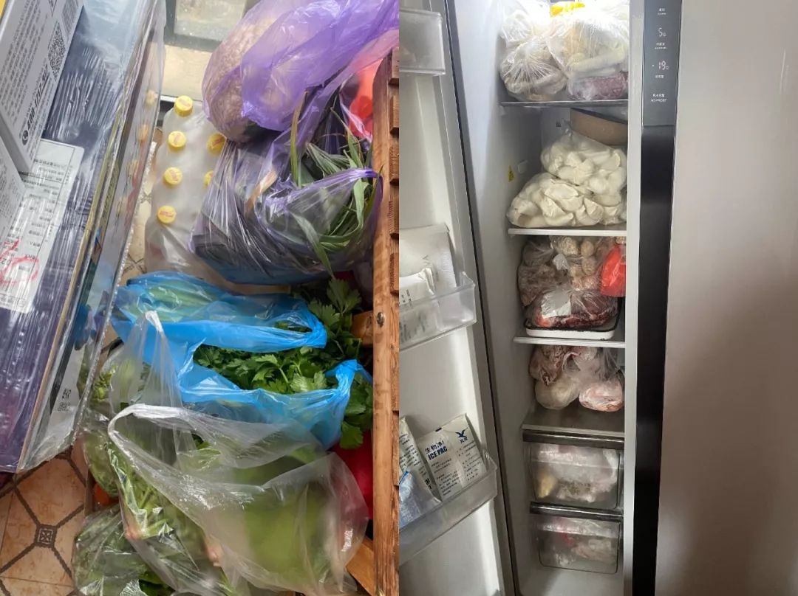
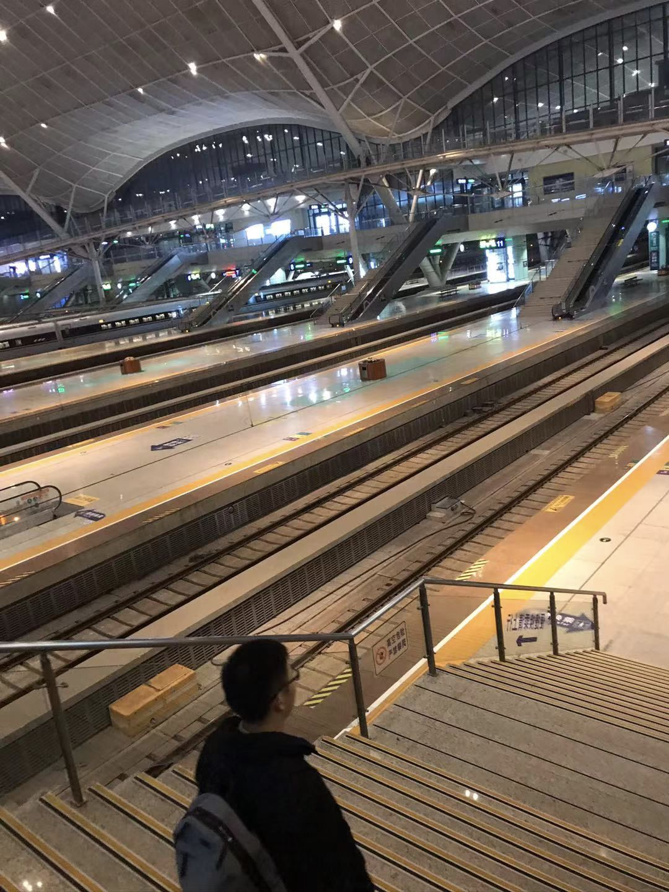

武汉真实口述：最无辜的人是他们……
原文链接 备份链接 作 者：叶青 中南财经政法大学教授、博导 湖北省统计局副局长 正和岛蓝色岛邻 来 源：正和岛（ID：zhenghedao） 我算是外来的武汉人。 1979年10月从老家福建建阳到湖北财经学院（即现在的中南财经政法大学） …
- 这是 新世相 的第1175 篇文章 -
Sayings：
大年初一，除夕过后的 24 小时，武汉封城已有 3 天。
除夕的钟声里，人们都在表达对武汉，以及整个湖北的牵挂。
为了知道更具体的信息，新世相编辑部找到了身在湖北的市民、一线医护人员和建设工人，火神山医院的工程师，被堵在高速路上的夫妻……
这不仅是武汉，也是湖北的除夕后24小时。
疫情中的 15 份湖北日记
自述：新世相的读者和朋友们
武汉 | 火神山医院工程师
“24小时不间断施工，
工程完成才算下班”
@寒笑清风，40 岁
目前武汉建设力量集中抢建火神山医院。
收到任务那一刻很紧张，过年期间休息，招不到人是最紧张的，我们都是按 1200 元一天日结招人。
24 小时不间断施工，施工管理人员 50 人在现场，100 台挖机开挖土方。

目前给水管道配套工程都已完工就位，正在进行道路铺设。

没有几点开始上班，几点下班。24 小时突击抢建，换班，累了现场挖机换人。
吃不消也得上，目标定了，2 月 3 日投入使用。
想想医院医护工作者都在玩命，我们就不怕了。
而且现在早一分钟完工，就能多救人！
湖北孝感 | 瑜伽老师
“除夕后的 24 小时，
我和 2000 人给医院送了物资”
@苏老师，36 岁
除夕夜 7 点多我吃完年夜饭，看到一个护士朋友的朋友圈：
“隔离衣防护镜什么都没有。”

**一问才了解到，孝感新建了个隔离区，医生护士们都上了，物资一下子跟不上。
**
每人只发了一个口罩。但实际上口罩 3 - 4 个小时就要换，但他们只有一个。
医生就穿着手术服，薄薄的。也不敢喝水，担心上洗手间把衣服撑破，就没穿的了。
我小姨一个同事发来视频：
爸爸担心女儿没有防护，就自己在家里面做。
我是做瑜伽馆的，群里有几百学员，就发了条消息，号召大家给一线工作人员集物资。
建好了四个 500 人的群，一个人拜托一个人，找到了第一波物资。


今天早上我们去医院送物资时，是护士长接的。
他把手套取下来想和我握手，我当时有点害怕，不敢握。
他说放心，我们都洗得很干净。
每个人都怕，我也是。
但医护人员安全了，我们也才安全。
湖北武汉 | 村委书记
“怎么让百姓不出门，
在想办法”
@匿名，54 岁
我是武汉远城区村子里的书记，目前村里还没发现病例。
除夕我在村委会值班。大年二十九我就在村里微信群里说不要拜年，但还是害怕出事。
好在路上都看不到人。大家还是挺自觉，打算在群里给他们发点小红包奖励下。
武汉封城后，区里开始封闭通向周边县市的通道，搭建临时棚子，24 小时专人值守，不允许有人出入。

每天村里 4 个村干部，10 个中心户长去每家每户核查发热的，从市区里回来的人，下午 3 点把数据报上去。
也有村民不在意：“冒得几大事，死不了。”
估计心里还是怕死，问他家里几口人，有没有从汉口、武昌回来的，很配合地说了。
前天街道拨口罩下来，但是每个人只够发一个，库存缺。
今天街道领导来送体温测量计，每个村发两个，够用了。
现在吃的东西很足，村里一进入腊月就开始备年货，腊鱼腊肉，鱼糕肉糕。
菜园里有大白菜、菜苔、红萝卜、白萝卜。
比较难的是，怎么让百姓五天十天更多天也能不出门，在想办法。
武汉武昌区 | 工程师
“有些无症状直接倒地的谣言，
越传越厉害”
@一个匿名的wmls，29 岁
昨天春晚倒数的时候，我们这边朋友圈都是求援信息。
我公司也在武汉，每天会统计员工的状态，是否发热并且是否有困难需要帮助。
大家每天都回复的正常。
之前说无症状直接倒地的谣言，就是从我们附近的小区传出去的。
是音频，说 120 来了直接盖白布拖走了，保安拿喇叭说不要出门，其实并没有。
但是流出去了，后面加上微信群传播，又加了武汉多段未知原因未知日期的倒地视频，就越传越厉害了。
然后昨天又有武汉版小汤山选址错误要重建，也辟谣了。

口罩家里还有，大前天去了 5 个药店，口罩和酒精都没有了。
湖北武汉 | 出版编辑
“我们一家三口分开吃饭
分房睡觉”
@十号，25 岁
昨晚没吃年夜饭，我和妈妈两个人过的。
我爸昨晚在铁路局值班。因为有路过的车辆需要调度，很多物资也是走铁路运输。
为了防止交叉感染，我们在家也戴口罩，除了洗澡和睡觉时不戴。
家里实行分餐制、分房睡。每个人用自己的碗筷勺子盘子，做好饭用公筷分好。
睡觉三个人分开，两个厕所也分开用，爸爸单独用一个。
街上是一片死寂，偶尔有救护车的声音。
明天开始禁止机动车通行了，普通人在家健康的还算好，如果生病了真的感觉求助无门。
能想到的都囤了。口罩，84消毒水，还下单了测血氧浓度的指夹（肺部被感染的话血氧浓度会低于正常水平），还有护目镜。
最缺的是口罩、消毒液以及药品。在淘宝买了但是不知道能不能发货，能不能拿到。
湖北随州 | 返乡创业者
“封城那天，
我给先生留了遗言”
@Miss Yang
我们从上海回乡探亲，经过武汉。
23 号下午 2 点左右。进出武汉的高速还是通的。结果到下一个路口，全部遣返。
2 公里路，我们走了 5 小时。
不知道出不出得去，不开车窗，也不跟人说话，在车里也戴着口罩。
那几个小时我都给先生留了遗言，从来没觉得这么恐惧过。

先生看了之后什么也没说，只是一直握着我的手。
武汉的情况更严重。
我一个大学室友说，买不到大白菜。
另一个室友住的地方，离汉口站和华南海鲜市场很近，只能抢到一根萝卜。
昨日 24 点封城，市中心街道一个人都没有。

但是湖北周边的小地方这两天才重视起来。
一直到几分钟前，我们小镇上才开始宣传不要串门。
小镇上已经有人被隔离了。
湖北武汉 | 国企员工
“我老公发烧了”
@nana，33 岁
大概三天前，我老公开始感觉不舒服，发抖怕冷喉咙疼。
昨晚七点开始发烧到 38.8 度，他一个人住在书房自我隔离，我煮好饭菜送进去，还要照顾 6 岁的女儿。
女儿满脸天真开开心心的，并不太理解现在的状况。我想保护好她，可我现在好像没有这个能力。
老公也不知道自己是肺炎还是普通感染发炎，症状上完全看不出来。
我们担心去医院反而会增加交叉感染的风险，纠结了一天一夜，他更难受了。

刚刚还是去了定点医院，人太多了排不过来。
不敢待太久，换了一家普通医院，医生查了血不能判断，让他回家继续观察。
我决定今晚趁机动车禁行之前，把孩子先送到老人那里去，我留下来照顾老公。
明天联系社区医院继续排查，不管结果如何先确诊。
湖北武汉 | 外来打工者
“两天，
我和工友们帮忙运了6趟物资”
@李先生，33 岁
我家在河南，人在武汉打工。平时疏通管道和下水道，还有井盖缺失维修。
看到火神山那边工地需要货车、挖掘机，老板也让我们自发去帮忙，我们有 6 辆货车，就在朋友圈发消息，说可以运送货物。
到现在运了2天，运了 6 趟医疗物资。

口罩不够用，我和 5 个工友跑了几个药房，最后只买到了 7 个。
但我们从早到晚都在跑，回一次宿舍，就先洗手洗脸，互相提醒工友测体温，然后拿烘干机烘一下潮湿的口罩，再用。
除夕夜我们几个工友凑一块，炒了几个菜 ：蒜苗炒鸡蛋、牛肉、羊肉……
没有人看春晚，都是看新闻：增长了多少例，哪又出现了新的疫情了。
好在我们身边没有确诊的。
还是挺想女儿的，听我媳妇儿说，有人问爸爸怎么没回去。女儿回答：
“现在武汉好多人感冒了，爸爸在那边给感冒的人送药呢。”
我女儿真懂事儿。
我们对这个城市都蛮有感情的：喜欢它的过早啊、热干面啊、武汉人说话的声音啊……感觉大家说话蛮逗的。
心里有不舍，希望能快点好起来。
湖北恩施 | 护士
“因为封路，
有些医生和护士赶不回来”
@Max，23 岁
恩施确诊 11 人了。
现在我们医院大概早上七点开始，医生护士就在门口对进出的人进行体温测量。
医院急需防护用品，口罩 N95 和外科口罩都是限量发放，按人头发，消毒用品也是限领的模式。

我们是临床支助中心，协助其他临床科室的一些工作。
休假的医生和护士都得赶回城区待命。
但有些人离得太远，回去的时候发现已经封路了，也没有车。


医院有食堂，吃饭是有保障的。
城市里的公交已经停运了，有自发组织的爱心车辆送我们上下班，真的很暖心。
车主一部分是医院家属，还有一些着急的社会上的人，总体来说还不多。
湖北武汉 | 杂志编辑
“不能让医生孤军奋战，
我号召上万人接送他们上下班”
@CAVAN，30 岁
我 14 号去南非休假，知道这个事，但没怎么重视。
22 号我回武汉，还和我老婆说：“武汉这么大的城市，不可能封的”。
没想到我真是乌鸦嘴，第二天就封城了，家庭为单位隔离。
刚封路就有朋友说有医生无法上下班。我就决定做这件事，不能让医生孤军奋战。
当时人不多，我们一对一。
所有车主必须戴口罩，尽可能戴护目镜。随身携带酒精或消毒液。
每接一个医生，车辆就通风 40 分钟，再接下一个。
这过程中事情开始发酵了——
本来加上医生 400 人不到的群，暴增到了几千人。
光昨天，我就建了 23 多个群，接近上万人，具体接送了多少医生我也统计不过来了。
除夕夜我就一直在回群里的消息，老婆也帮我管了两个群。年夜饭就吃的泡面。
没有大年初一的概念，看到有人在朋友圈发段子才意识到：
原来是除夕，原来今天有春晚。
我现在觉得一天的时间好长，电话从来没有停过，人也没怎么睡过觉。
不过政府刚刚出公告：明天开始，所有的车不让上街了，说政府会统一组织。
也好，我们也算完成了自己的使命。
湖北武汉 | 冰点周刊记者
“我不怕上一线”
@王嘉兴，25 岁
我日子过得有点恍惚了，昨天是 24 号吗？
昨天拿到同事在火神山拍摄的照片后，我在家统稿，到凌晨 3 点才上床休息。
我本身就是武汉人，18 号回家过年，也想报道肺炎这件事，但没想到疫情这么严重。
直到 23 号早上 7 点打开手机看到封城。
我第一反应是要去火车站看一看，去时发现公安干警已经拉起人墙了。
有很多人排队退票，取了纸质票的必须人工窗口退，黑压压的一片。

然后去菜市场超市看，蔬菜 10 点就抢购光了。
想拿起相机拍照，保安就过来要删掉。
我用武汉话跟他说我是武汉的学生，来做社会调查的，他就算了。
我妈一开始会阻止我，说“又不缺你一个人采访”。
但我不怕上一线。

武汉武昌 | 市场销售
“第一步封城，
第二步封桥，现在封机动车了”
@大芸，29 岁
我四天没出门了，这是家里囤的粮食：

今天是大年初一，但我家楼下特别冷清。

过年前的两个星期，武汉还是很热闹的。
1 月 16 日，我们家还组织家族聚会，一起吃年饭、唱歌，根本不知道这个病的严重性。
我嫂子是武汉三甲医院的医疗工作者，抗战在第一线。
特殊时期，她现在基本就住医院了。她 6 岁的儿子，每天哭着吵着要妈妈。
我嫂子没给他打过电话，她们连吃饭的时间都没有，还要忍着不上厕所。
我们告诉他——妈妈救人去了。
我们能理解：医务人员只能走在最前面，才能帮助武汉度过难关。

**
湖北武汉 | 小学老师
“我们给3000个学生打了电话”
@花花
**
我在一个 3000 人的小学当老师，事情严重后，所有老师挨个给每个学生打电话，通知延长假期，具体什么时候开学另行通知。

事情是慢慢严重的——开始有人主动输送我 100 个口罩。小区门口有了专门收废弃口罩的垃圾桶。
**

**
这几天一直阴天，不利于控制疫情，挺担心继续扩散的，在家自我隔离，线上了解学生的状况。
武昌青山 | 研究生
“小区家家户户都亮着灯，
但就是没有声音”
@我是谁，25 岁

这是封城前一天武汉站的照片，是空的。
我还在读研，1 月 17 日放假，原本初八要回北京做实验，现在肯定是不可能了。
青山这边不是重灾区，确诊人数未知，官方公布的数据未说明具体区域。
公共交通全部停止，大家出门丢垃圾都戴口罩。
我没去过医院，不敢去。因为定点医院人满为患。
有不少人都慌了。
我一个姐妹，今天觉得自己心慌，明天觉得自己恶心，总觉得自己符合症状。
问了心理学同学，说是应激。
我封城那天一晚上没睡，出消息就在盒马下单，囤了一个多星期的粮食。
现在所有的餐馆资源都想让给医务人员。
要封城那刻我觉得挺好的，反正出去了也要被骂。

封城前一天的武汉站
有个 10 年前认识的、5 年以上没说过话的网友，给我发消息：
“你好吗？我还记得你是武汉的。”

我当时就哭了。前一秒，我在微博看到了很多骂声。
现在我望着窗户外面，家家户户都亮着灯，但小区没人也没车声，安静得能听到空调的声音。

我爸刚下去丢垃圾，买了瓶酱油，现在研究怎么健身。
我爸心态真好，他应该是觉得一切都会好起来的。
我也相信。
撰稿：宋温暖 Cassie 林小四
故事采集：吴阿赞 罗麦子 胖丁 袁灿烂 Zed 未未
责编：宋温暖
内容总监：杨杨
实习生：刘悦 向琳 薄晓倩

晚祷时刻：
不仅仅是武汉，
湖北多地都急需防疫物资捐助。
@人民日报汇总了湖北各地医院发出的求援公告，
**我们整理了其中的关键信息如下：
**
【防护物资（耗材）清单】
护目镜、N95口罩、外科口罩、一次性医用口罩、医用帽、防护
服、手术衣、防冲击眼罩、防护面罩。
【部分防护物资（耗材）需符合或高于下列国家标准】
—医用防护口罩GB 19083-2010
—医用外科口罩YY 0469-2010
—防护服 GB 19082-2003《医用一次性防护服技术要求》
【需要捐助的医院（包括但不限于）】
鄂州市中心医院
地址:湖北省鄂州市文星路9号
联系方式：鄂州市中心医院设备科:0711-3251382（鄂州）
江老师 13971986663
来凤县中心医院
地址:湖北省恩施土家族苗族自治州来凤县中心医院
联系方式：陈炫颖 17607187131 林涵 18826909645
黄冈市疾控中心
地址:湖北省黄冈市黄州区白潭湖大道黄冈市疾控中心
联系方式:干莉 18972720993
湖北省黄冈市中心医院
地址:湖北省黄冈市考棚街11号
湖北省黄冈市中心医院病毒性肺炎防控工作指挥部
联系人:杨女士18986552717 0713-8625818
荆门市第二人民医院
地址:湖北省荆门市象山大道39号
联系方式:2633040/13971846667（周科长）
恩施市中心医院
地址:湖北省恩施市航空大道234号
联系方式:0718—8223261
马老师 18972411999
红安县人民医院
地址：红安县城关镇陵园大道附50号
联系方式: 0713-5242320
设备科周主任13636105950
黄冈市中医医院
地址:湖北省黄冈市黄州区东门路19号
联系人:喻剑17371300596
蕲春县人民医院
地址:湖北省黄冈市蕲春县漕河大道198号
联系方式：公共卫生科袁科长 13971729826
浠水县中医院
地址:浠水县清泉镇民政路140号
联系方式:叶奇志 15327748777
协和京山医院
地址：湖北省京山市新市镇京源大道448号
协和京山医院／京山市人民医院设备科
联系方式:0724-7337325
张老师 13972873417 胡老师 13986982801
荆门市漳河新区漳河镇卫生院
地址:湖北省荆门市漳河新区漳河镇文卫路47号
联系方式:0724-8682356
高老师 13972867246 王老师 13797987195
荆州市第二人民医院
地址:荆州市沙市区江津路241号 荆州市第二人民医院器械科
联系方式:18972162100 谢忠义 18972162868 项成 15827718818
荆州市第一人民医院
地址:湖北省荆州市沙市区航空路8号
联系方式：器械科王伟 18163138991
0716-8110524 0716-8111888 18972161210
襄阳市第一人民医院
地址:襄阳市樊城区解放路15号
联系方式:0710-3420098；0710-3420114
罗老师 18071565006 彭老师 15571198903
华中科技大学同济医学院附属协和医院
地址：湖北省武汉市江汉区解放大道1277号
华中科技大学同济医学院附属协和医院总务处
联系方式:027-85726035
吕老师 13807138996；程老师 13971115010；
支老师 13477037766
武汉市中心医院
地址:湖北省武汉市江岸区胜利街26号武汉市中心医院设备科
联系方式:027-82211225；杨芸 18627907799
武汉儿童医院
地址:湖北省武汉市江岸区香港路100号武汉儿童医院
联系方式:肖老师 18502764706 张老师 15623500317
武汉市第一医院
地址:湖北省武汉市中山大道215号武汉市第一医院设备处
联系方式:金老师 18171397656 曹老师 15827413206 袁老师18372024857
武汉大学人民医院
地址:湖北省武汉市武昌区解放路238号 武汉大学人民医院医疗设备处
联系方式：+86 2788042293（武汉）
潘老师 18672336467 洪老师 13297015094
武汉大学中南医院
地址:湖北省武汉市东湖路169号 武汉大学中南医院
联系人:张老师 02767813010 15072332328
湖北省中医院
地址:武昌区花园山4号湖北省中医院
洪山区珞喻路856号湖北省中医院光谷院区
联系方式：唐莉 18986072142
武汉市第五医院
地址：武汉市汉阳区显正街122号武汉市第五医院
联系方式：姜燕 13277904142
平安，
**一定要平安！
**
↓↓↓****
原文链接 备份链接 作 者：叶青 中南财经政法大学教授、博导 湖北省统计局副局长 正和岛蓝色岛邻 来 源：正和岛（ID：zhenghedao） 我算是外来的武汉人。 1979年10月从老家福建建阳到湖北财经学院（即现在的中南财经政法大学） …
原文链接 备份链接 这名医生担心疫情在黄冈下面的县市地区进一步扩散。「现在所有人都把目光放在武汉，少有人注意到周边地区。这些地区的医疗物资本来就不足，要是没人关注的话，就会变成第二个武汉。」 文｜****苏东 编辑｜**** …
原文链接 备份链接 界面新闻记者 刘海川摄 记者 | 刘海川 王健 杨舒鸿吉 编辑 | 1 编者按：这是武汉三个场景下除夕夜的故事。透过他们，我们看见武汉的局部细节，看见平凡市民们的焦虑，疲惫，坚强和希望。新的一年已经到来，愿武汉与我 …
原文链接 备份链接 1月23日凌晨，武汉宣布自10时起，全市的航空、铁路、城市公交、地铁、轮渡、长途客运暂停运营，无特殊原因，市民不要离开武汉。新型冠状病毒肺炎，正考验着这座九省通衢的特大城市。 此后24小时，真实故事计划访问了几位选择留 …
原文链接 备份链接 记者 | 驳静 董冀宁 实习记者 | 李秀莉 昨天下午，“湖北之声”发布《武汉紧急求援》，指出多家医院物资紧张，可能只够维持3-5天。本刊记者接触到的一线医护人员也反应了同样的情况。“为什么我们显得这么着急呢？病毒肆 …